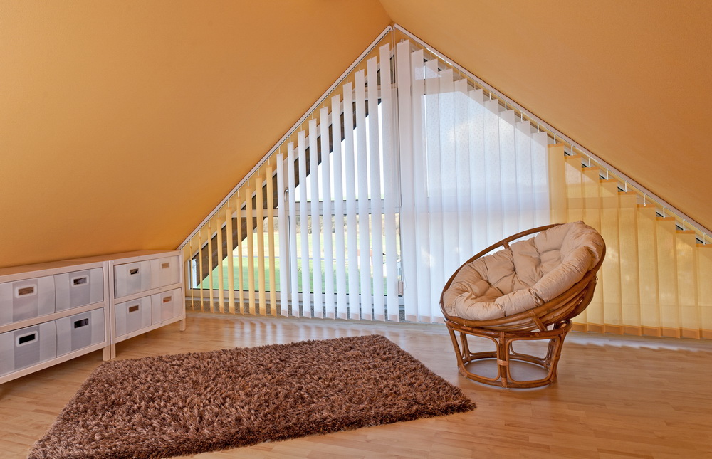
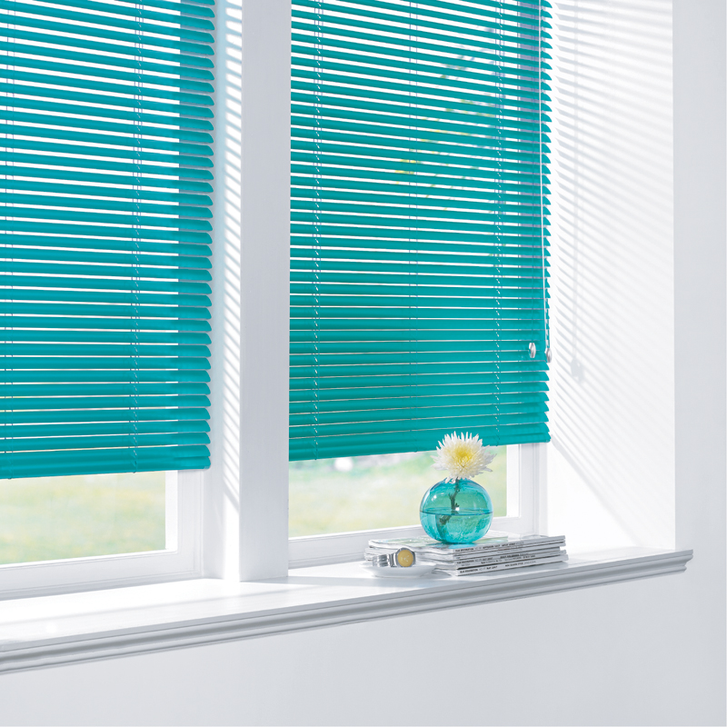
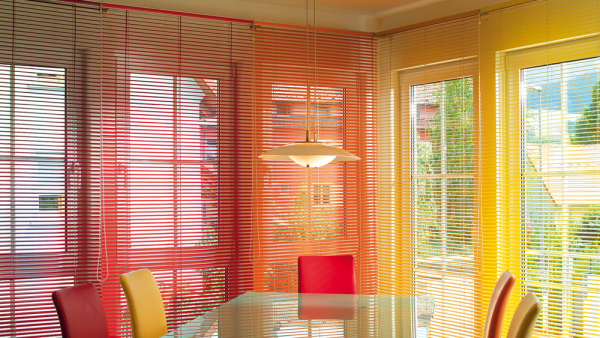
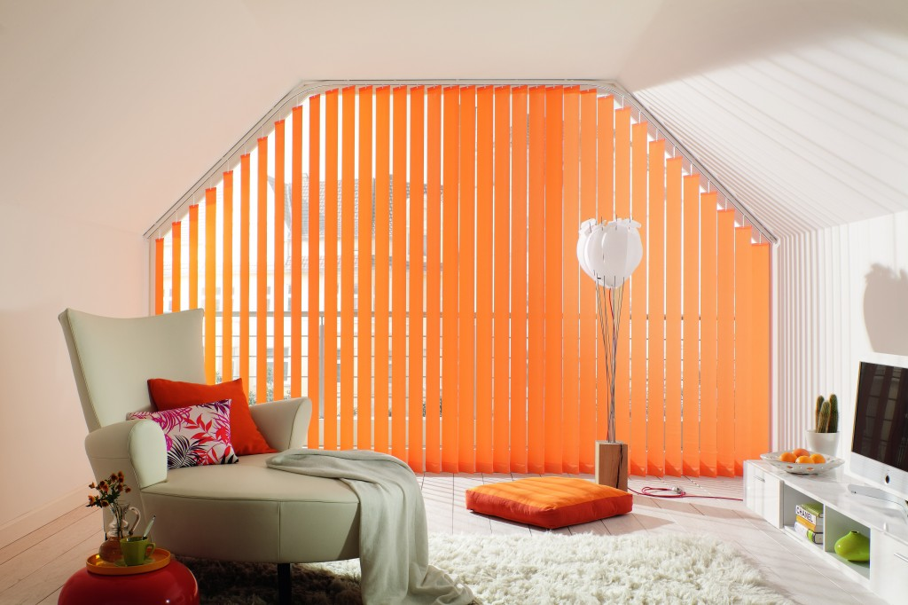

Роллеты и жалюзи
Роллеты
В крупных городах, одним из которых является Санкт-Петербург, очень много проспектов с огромным количеством магазинных и офисных витрин, где нашему вниманию предлагается изобилие товаров и услуг. А мы предлагаем надежную защиту Ваших коммерческих помещений путем установки роллет на окна и входные двери. Обеспечение дополнительной безопасности Вашего бизнеса никогда не будет лишнее.
Роллеты представляют собой жалюзи в виде рулона, изготовленные из прочнейшего материала, способные сохранить в целостности стеклянные витрины, окна или двери. Они, как ворота, полностью и наглухо закрывают собой любые проемы с наружной стороны, не оставляя никому возможности проникнуть внутрь.
Роллеты устанавливают не только на витрины или входные двери магазинов, супермаркетов, бутиков, торговых и деловых центров и мелких офисов, но также роллеты иногда ставят в комплекте с монтажом металлопластиковых окон в городских квартирах и загородных домах. Среди граждан есть желающие обезопасить свои апартаменты, находящиеся, к примеру, на первых этажах, путем установки роллет.
Роллеты, безусловно, являются хорошей защитой окон Вашей квартиры от каких-либо внешних воздействий с улицы. Наши специалисты выполнят качественную установку роллет. Обращайтесь!
Жалюзи
В современном мире широко известен принцип такой конструкции, как жалюзи. Скорее всего, никто не был бы против установки этой удобной модной и красивой системы на свои окна. Мы предлагаем Вам рассмотреть ассортимент жалюзей, который состоит из невероятно огромного выбора от всей палитры цветов до несения всевозможных узоров. Они, безусловно, скрасят и оживят своим видом любой интерьер.
По типам открывания и закрывания жалюзи бывают вертикальные и горизонтальные. Любой из этих способов при закрытии жалюзей не даст ярким солнечным лучам постоянно светить Вам в глаза, раздражая и нарушая Ваше спокойствие. А раздвигая жалюзи под удобным углом, Вы можете самостоятельно управлять освещением комнаты, так как тюль и шторы не во всех случаях могут справиться с такой важнейшей задачей.
Звоните или отравляйте заявку через форму обратной связи, мы ответим Вам в ближайшее время! Не забывайте, что для того чтобы установить жалюзи, необходимо выполнить все замеры окна, с той же точностью, как и для монтажа самого пластикового окна.